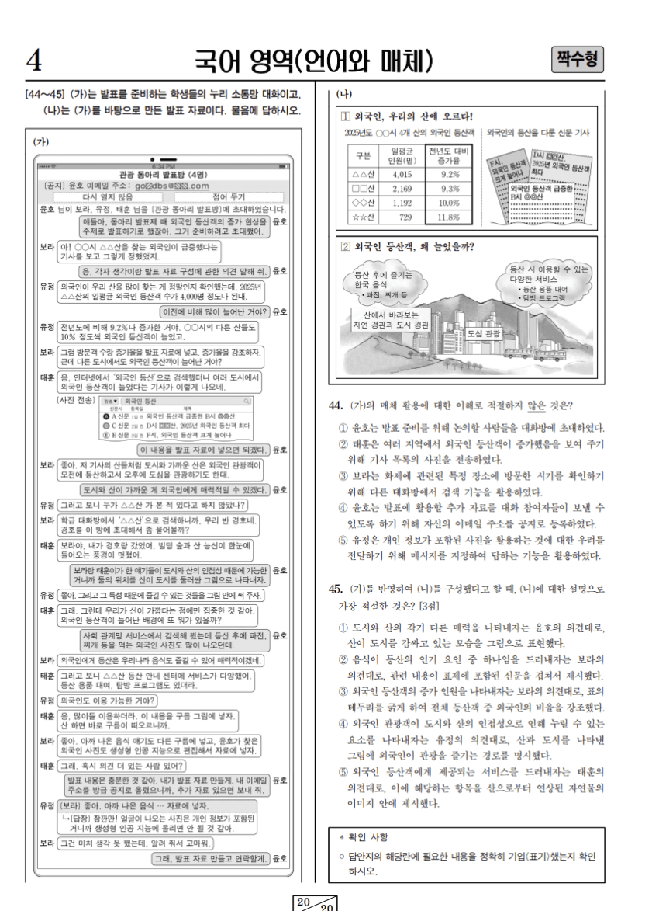
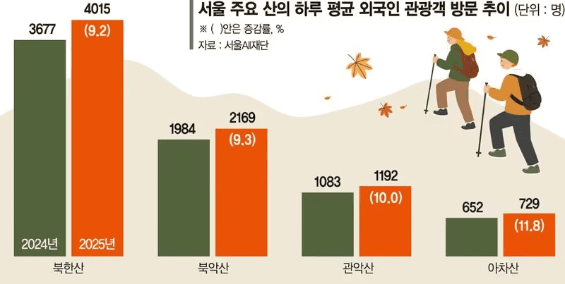

거기에 수능이 있기때문
실제 오늘 국어영역에 아차산 등장 ㄷㄷㄷㄷ


거기에 수능이 있기때문
실제 오늘 국어영역에 아차산 등장 ㄷㄷㄷㄷ
문제만 봐도 어지럽다.
할아버지 손두부 가게 근처 사는데 미어터지겠네
검증한다 하더니만 이런뜻이였구나...문제 그 자체가 되부렀어
지문만 5분은 읽어야겟네
지문 하나가 반페이지를 쳐먹네 ㄷㄷ
ㅋㅋ 항상 양식이 비슷해서 저런건 금방금방 풀임
지문이 길고 등장인물의 주장을 머릿속에서 연결해야하는게 귀찮아서 그러지 문제 난이도 자체는 중하급임
3,4 인가? 2분좀 안되게 걸리넹
3 5 자연물 = 구름
매체 파트는 국어시험중 가장 쉬운 파트중 하나이다
예전이랑 패턴은 똑같네 ㅋㅋㅋ
대충 읽고 넘어가면 맞는것처럼 보이게 써둔 선택지
매체 파트는 지문만 길지 정답률 90퍼 95퍼씩 나오는 못맟추면 문제있는 문제임
애초에 지문도 전부 읽을 필요가 없고..
아차차